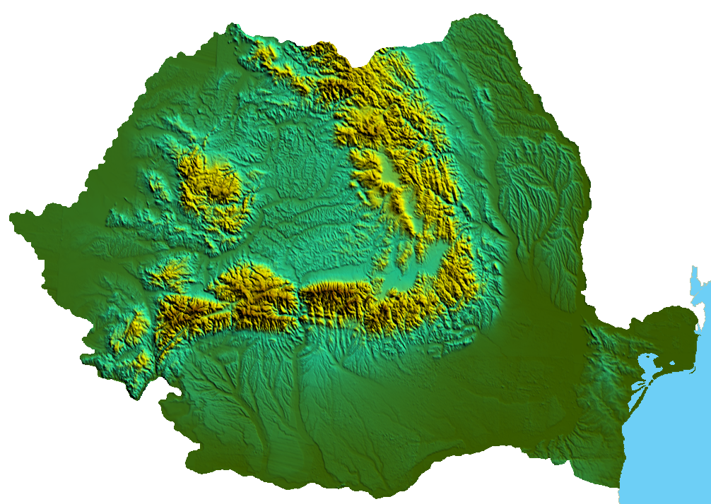

|
With an area of 238,400 square kilometers, Romania is the twelfth-largest country in Europe.
Located in Southeastern Europe, bordering on the Black Sea,
the country is halfway between the equator and the North Pole and equidistant
from the westernmost part of Europe—the Atlantic Coast—and the most easterly—the Ural Mountains.
Romania has 3,195 kilometers of border. Republic of Moldova and Ukraine lie to the east, Bulgaria lies to the south, and Serbia and Hungary to the west.
In the southeast, 245 kilometers of sea coastline provide an important outlet to the Black Sea and the Atlantic Ocean. |
 |